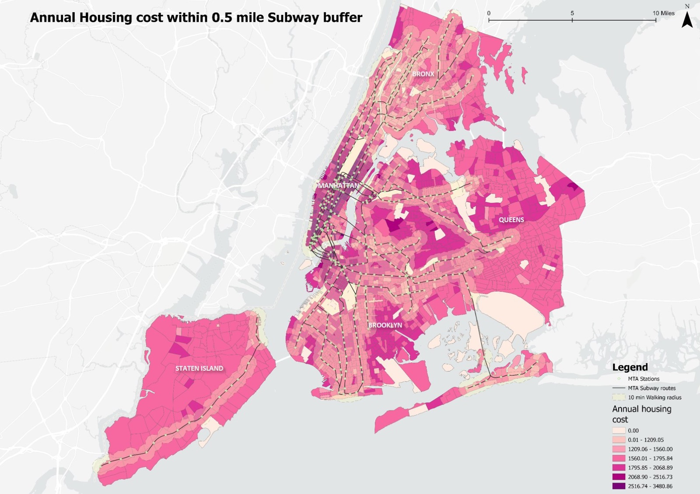
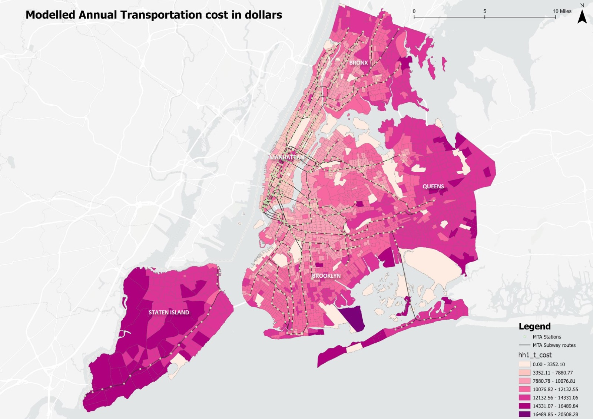
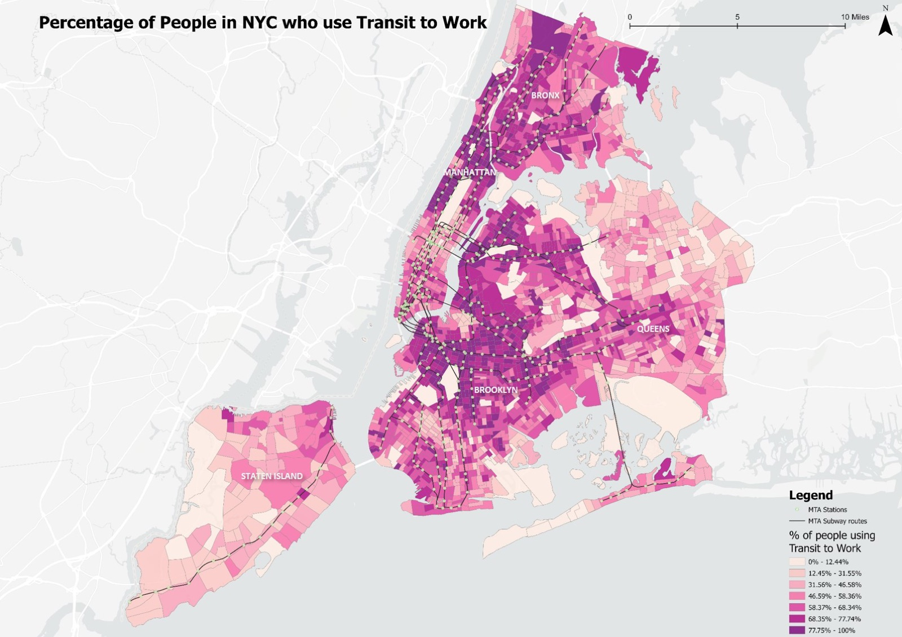
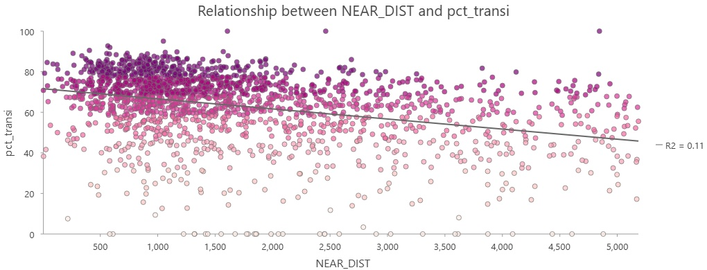
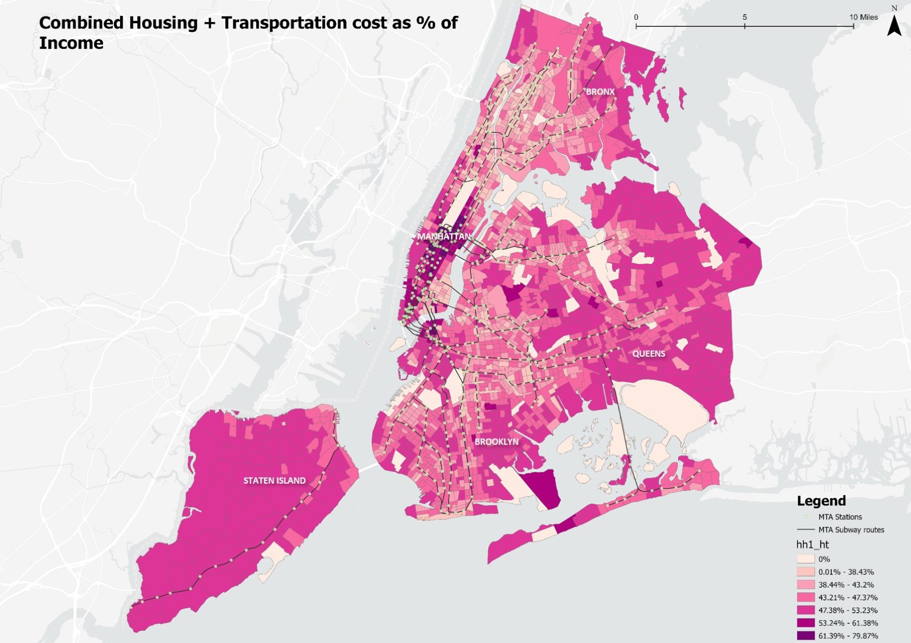

The question
Housing affordability in New York is usually judged on rent alone. That misses the time and transportation costs that come with an address. Households take smaller, more expensive homes for shorter, more predictable commutes, or cheaper rent for longer ones. The Housing + Transportation Affordability Index from the Center for Neighborhood Technology treats the two together as location efficiency, and this project maps that idea across the five boroughs.
Two research questions. Do areas with a lower affordability index show lower transportation costs or higher transit use, suggesting time savings? And how does combining housing and transportation costs reveal patterns of location efficiency within the city?
Method
Housing cost stands for money; transportation patterns stand in for time. Each variable was cleaned, joined to tract boundaries, standardised to one projection and mapped with a consistent classification, then combined into one H+T map. The four layers come from HUD's Location Affordability Index, filtered to the five boroughs:
- Annual housing cost: the median total cost of occupying a home, gross rent or owner costs plus basic utilities, from the American Community Survey.
- Modelled annual transportation cost: an estimate from household income, household size and employment access, covering the likelihood of car ownership, distance driven and transit fares.
- Subway transit usage: the share of workers aged 16 and over in each tract who commute by public transportation.
- Combined H+T cost: housing plus transportation costs as a share of household income.
Findings
Buying your morning back
The housing cost map shows a purple core in Manhattan and along the subway spines of Brooklyn and Queens, where residents pay a premium to live inside the half-mile station buffers. The highest tier of annual housing cost is, in effect, a pre-payment for proximity.

The sunk cost fallacy
The transportation cost map is a heat map of the outer boroughs: costs spike where there is no rapid transit. As rent drops toward the edges, car dependency and its costs rise to fill the gap, and the savings vanish into insurance and fuel.

The wait of the world
Transit use is pinned to the subway network and its 10 minute walk buffers. The scatter plot of transit share against the distance from each tract's centroid to the nearest station shows a clear downward trend as the distance grows. New Yorkers walk about half a mile for a train, and not much further.


The final math
The combined H+T map shows lighter affordability ribbons following the subway lines into the outer boroughs. There, near-zero transportation cost offsets high rent and keeps households within a more sustainable total. Those are the time-rich tracts, where the subway subsidises the rent.

Limitations
Housing quality and space, schools and life stage, rent regulation, social ties and income and credit constraints all shape where people live and sit outside this analysis. Future work would add school quality, building age and condition, rent stabilisation status, employment location by sector, and transit reliability rather than proximity alone.
Conclusion
Housing prices in New York reflect time as well as space. Choosing a smaller, more expensive home near the train is often a strategic response to daily friction rather than an irrational one, and affordability has to be read through location efficiency, not rent alone. In a city this dense, policies that improve mobility may be among the most effective ways to return time to people's days.